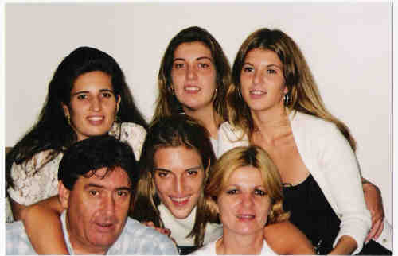
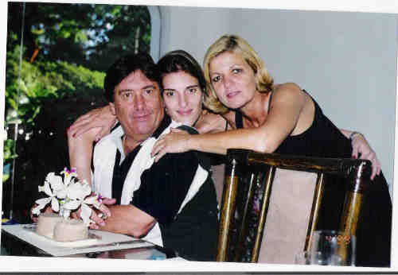
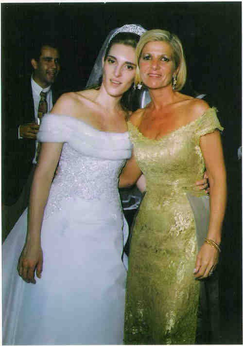

Filomena Natrielli
- Nascida em: 1 Abr 1948, São Paulo, Sp
- Casamento: Werner Gerhardt Júnior em 4 Dez 1969

 Notas Gerais: Notas Gerais:
Sua filha "Pati" nos enviou a seguinte mensagem sobre a sua mãe:
"Minha mãe é outra pessoa maravilhosa e que eu amo e admiro muito também. Ainda bem que ela ainda está aqui e vivo falando a ela o quanto a amo e admiro e que espero conseguir ser pelo menos um pouco do que ela é para mim, para o Pedro. E se eu conseguir educar o Pedro e ser importante como meus pais são para mim, serei a mãe mais feliz do mundo também !!!
Aproveito o máximo do tempo que posso com ela. Queria poder devolver a felicidade e o otimismo que ela sempre teve, e me sinto "inútil" por não conseguir animá-la. Rezo todos os dias a DEUS para deixar meu pai estar bem e descansar em paz e peço para deixar minha mãe voltar a ser feliz e ter vontade de fazer as coisas (ela sempre foi super forte, e anda desanimada...).
Ainda vivo aconselhando meus amigos que têm os pais vivos para aproveitá-los MUITO enquanto eles estão aqui. A dor da perda e a falta que eles fazem as pessoas só sentirão quando os perderem... Às vezes, as pessoas acham que sabem, querem ajudar e aconselhar, mas só sentiremos o que realmente é, quando acontecer conosco. "
Eventos notáveis em Sua vida foram:

• fotos: aniversáro filó de 50 anos (ale, dad, eu, dani, ieié e mom.

• fotos: 04-abr.-1998 aniversário do meu pai - pai, eu, mãe.
.jpg "05-07-1999 meu casamento - Ale- Pai - Pati - Ieié - Mãe - Dani (478 KB)
(Clique na Foto para vê-la no Tamanho Original)")
• fotos: 05-07-1999 meu casamento - Ale- Pai - Pati - Ieié - Mãe - Dani.

• fotos: meu casamneto - eu e mom.
Filomena casad[:o::a] Werner Gerhardt Júnior em 4 Dez 1969. (Werner Gerhardt Júnior nasceu em em 4 Abr 1945 em São Paulo, Sp e faleceu em 9 Abr 2003 em São Paulo, Sp.)
|


(Clique na Foto para vê-la no Tamanho Original)")